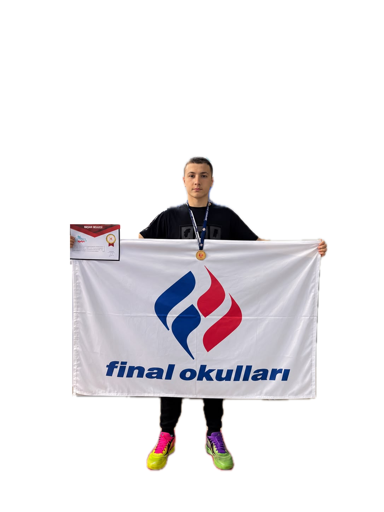

YAKACIK FİNAL OKULLARI'NDAN
YÜZMEDE İSTANBUL'DA
ÇİFTE İKİNCİLİK!

BORA MEHMET ÇELİKDEMİR
Özel Yakacık Final Anadolu Lisesi Öğrencimiz
24–26 Kasım 2026 ·
Okul Sporları Gençler Yüzme İl Birinciliği
2
50 M SERBEST
İstanbul 2.si
2
100 M SERBEST
İstanbul 2.si
4
50 M SIRTÜSTÜ
İstanbul 4.sü